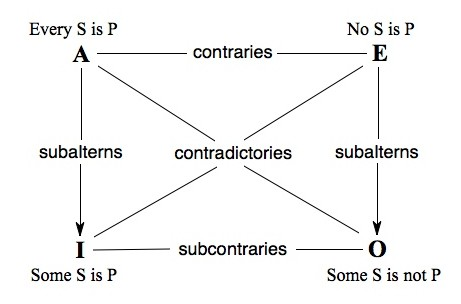
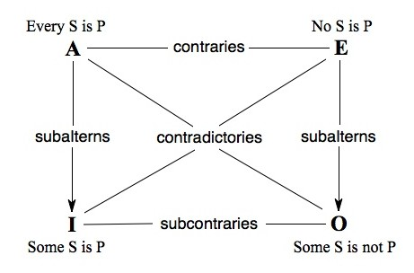

Subalternation
According to the Ancients, Schoolmen, and Moderns
Subalternation is defined:
SaP⊃SiP
SeP⊃SoP
The Square of Opposition, as pictured on the right, to the bottom of S. Albertus Magnus, depicts the respective logical relationships between certain categorical propositions. To define our functors briefly outlined above, we have:
A functors are of the form: All S are P
E functors are of the form: No S are P
I functors are of the form: Some S are P
O functors are of the form: Some S are not P